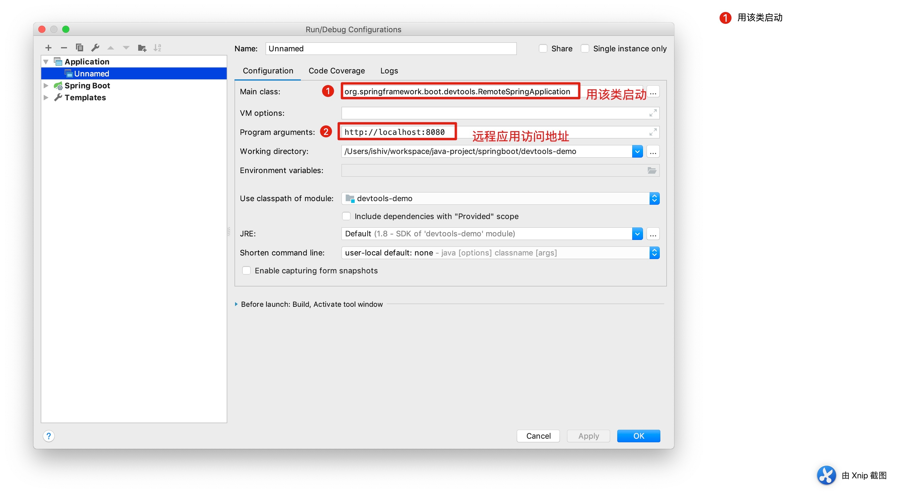

Springboot devtool远程应用功能
这里主要介绍一下，远程应用的特性。采用springboot版本为2.0.6.RELEASE
一. 引入devtools
- maven
<dependencies>
<dependency>
<groupId>org.springframework.boot</groupId>
<artifactId>spring-boot-devtools</artifactId>
<optional>true</optional>
</dependency>
</dependencies>
- gradle
dependencies {
compile("org.springframework.boot:spring-boot-devtools")
}
二. 开启远程功能
Spring Boot developer工具并不局限于本地开发。在远程运行应用程序时，还可以使用几个特性。要启用远程支持，需要确保devtools包含在重新打包的归档文件中，如下：
<build>
<plugins>
<plugin>
<groupId>org.springframework.boot</groupId>
<artifactId>spring-boot-maven-plugin</artifactId>
<configuration>
<excludeDevtools>false</excludeDevtools>
</configuration>
</plugin>
</plugins>
</build>
远程devtools支持分两部分提供:接受连接的服务器端端点和在IDE中运行的客户端应用程序。当设置了spring.devtools.remote.secret属性时，服务器组件将自动启用。客户端组件必须手动启动。
配置spring.devtools.remote.secret属性
spring.devtools.remote.secret=shi |
|---|
注意：在远程应用程序上启用spring-boot-devtools存在安全风险。不应该在生产部署上启用支持。
三. 打包你的应用
写一个简单的controller
@RestController
public class IndexController {
@GetMapping("hello")
public String hello() {
System.out.println("hello");
return "hello";
}
}
然后mvn clean package 生产jar文件
运行jar：devtools-demo-0.0.1-SNAPSHOT.jar(因为没有远程环境，在本地模拟一下)
浏览器访问
四. 运行你的远程客户端
在你的IDE（我用的是Idea）里启动你的代码，操作步骤：
1、在菜单栏选择 run > edit configrations
2、如下图

3、启动
......
. ____ _ __ _ _
/\\ / ___'_ __ _ _(_)_ __ __ _ ___ _ \ \ \ \
( ( )\___ | '_ | '_| | '_ \/ _` | | _ \___ _ __ ___| |_ ___ \ \ \ \
\\/ ___)| |_)| | | | | || (_| []::::::[] / -_) ' \/ _ \ _/ -_) ) ) ) )
' |____| .__|_| |_|_| |_\__, | |_|_\___|_|_|_\___/\__\___|/ / / /
=========|_|==============|___/===================================/_/_/_/
:: Spring Boot Remote :: (v2.0.6.RELEASE)
.....
然后选择菜单build > build project
控制台输入增加了下面两行提示：
2018-10-26 23:15:41.661 INFO 6430 --- [ File Watcher] o.s.b.d.r.c.ClassPathChangeUploader : Uploaded 1 class resource
2018-10-26 23:15:43.057 INFO 6430 --- [pool-1-thread-1] o.s.b.d.r.c.DelayedLiveReloadTrigger : Remote server has changed, triggering LiveReload
浏览器再次访问：

发现我们部署的代码也已经自动更新了。